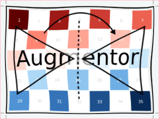
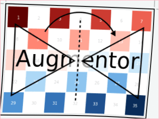

ElasticDistortion: Smoothed random distortions
Augmentor.ElasticDistortion — Type.ElasticDistortion <: Augmentor.ImageOperationDescription
Distorts the given image using a randomly (uniform) generated vector field of the given grid size. This field will be stretched over the given image when applied, which in turn will morph the original image into a new image using a linear interpolation of both the image and the vector field.
In contrast to [RandomDistortion], the resulting vector field is also smoothed using a Gaussian filter with of parameter sigma. This will result in a less chaotic vector field and thus resemble a more natural distortion.
Usage
ElasticDistortion(gridheight, gridwidth, scale, sigma, [iter=1], [border=false], [norm=true])
ElasticDistortion(gridheight, gridwidth, scale; [sigma=2], [iter=1], [border=false], [norm=true])
ElasticDistortion(gridheight, [gridwidth]; [scale=0.2], [sigma=2], [iter=1], [border=false], [norm=true])Arguments
gridheight: The grid height of the displacement vector field. This effectively specifies the number of vertices along the Y dimension used as landmarks, where all the positions between the grid points are interpolated.gridwidth: The grid width of the displacement vector field. This effectively specifies the number of vertices along the Y dimension used as landmarks, where all the positions between the grid points are interpolated.scale: Optional. The scaling factor applied to all displacement vectors in the field. This effectively defines the "strength" of the deformation. There is no theoretical upper limit to this factor, but a value somewhere between0.01and1.0seem to be the most reasonable choices. Default to0.2.sigma: Optional. Sigma parameter of the Gaussian filter. This parameter effectively controls the strength of the smoothing. Defaults to2.iter: Optional. The number of times the smoothing operation is applied to the displacement vector field. This is especially useful ifborder = falsebecause the border will be reset to zero after each pass. Thus the displacement is a little less aggressive towards the borders of the image than it is towards its center. Defaults to1.border: Optional. Specifies if the borders should be distorted as well. Iffalse, the borders of the image will be preserved. This effectively pins the outermost vertices on their original position and the operation thus only distorts the inner content of the image. Defaults tofalse.norm: Optional. Iftrue, the displacement vectors of the field will be normalized by the norm of the field. This will have the effect that thescalefactor should be more or less independent of the grid size. Defaults totrue.
See also
Examples
using Augmentor
img = testpattern()
# distort with pinned borders
augment(img, ElasticDistortion(15, 15; scale = 0.1))
# distort everything more smoothly.
augment(img, ElasticDistortion(10, 10; sigma = 4, iter=3, border=true))| Input | ElasticDistortion(15, 15, 0.1) |
|---|---|
 |  |
| Input | ElasticDistortion(10, 10, 0.2, 4, 3, true) |
|---|---|
|  |